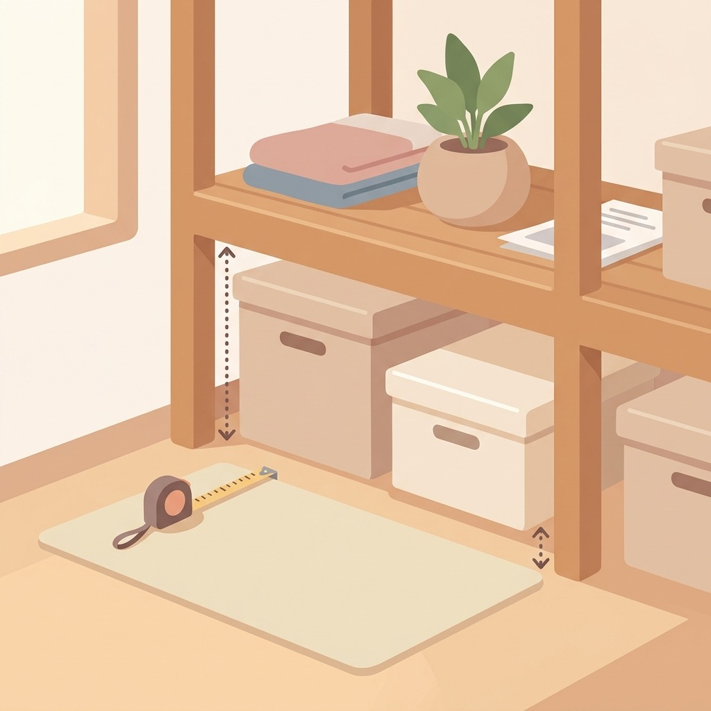
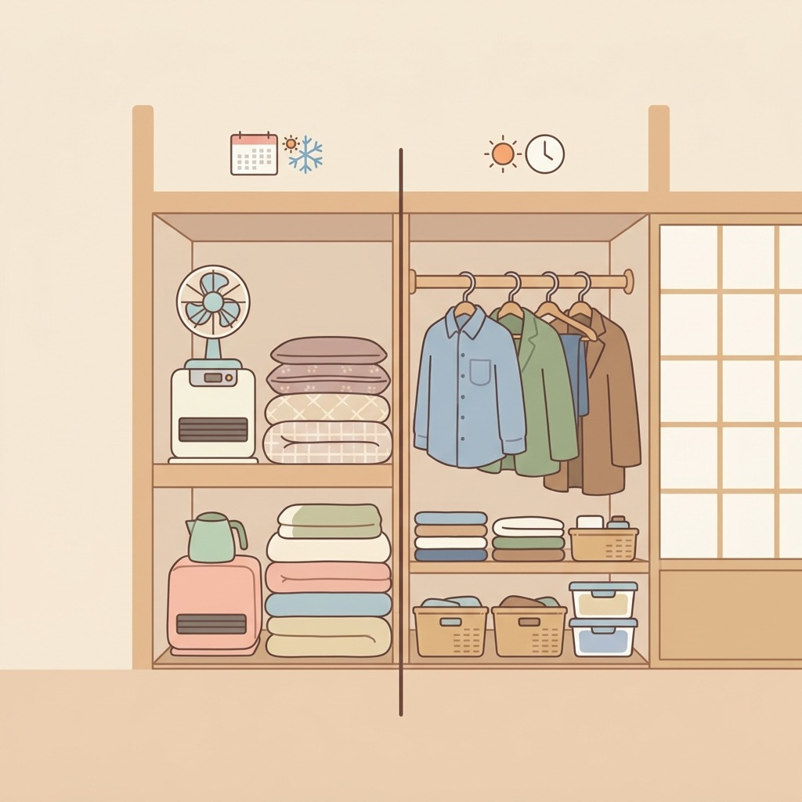
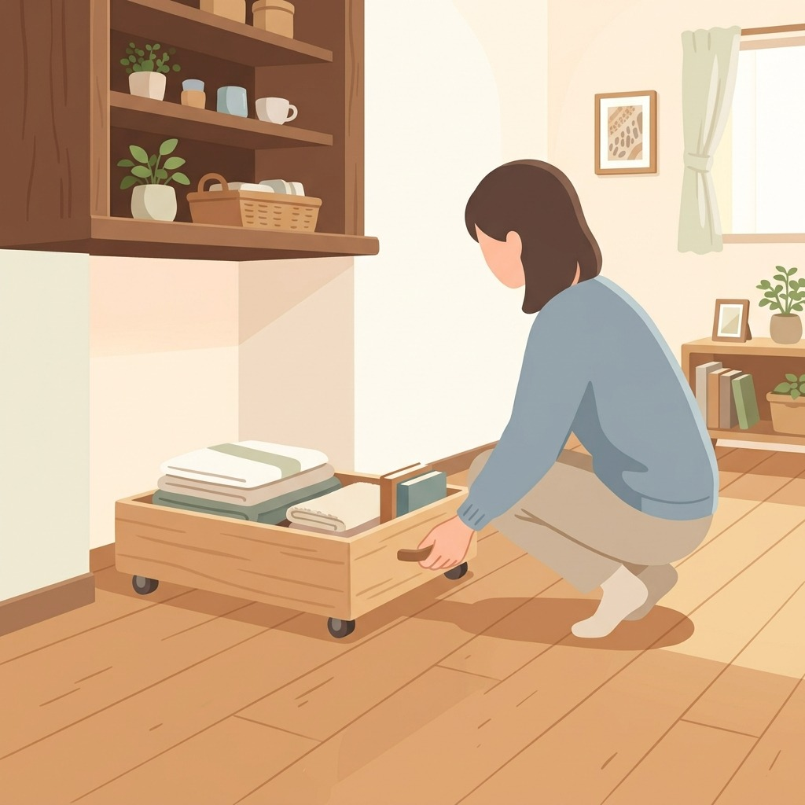
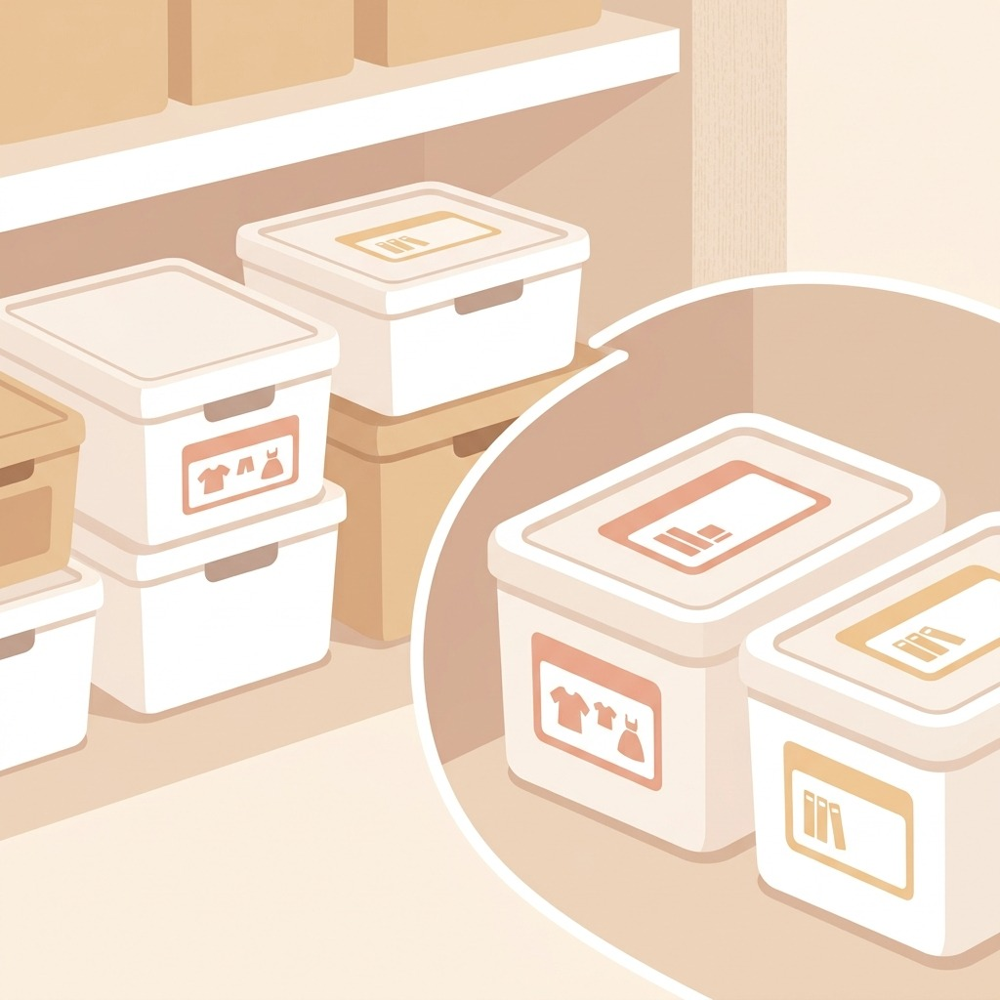
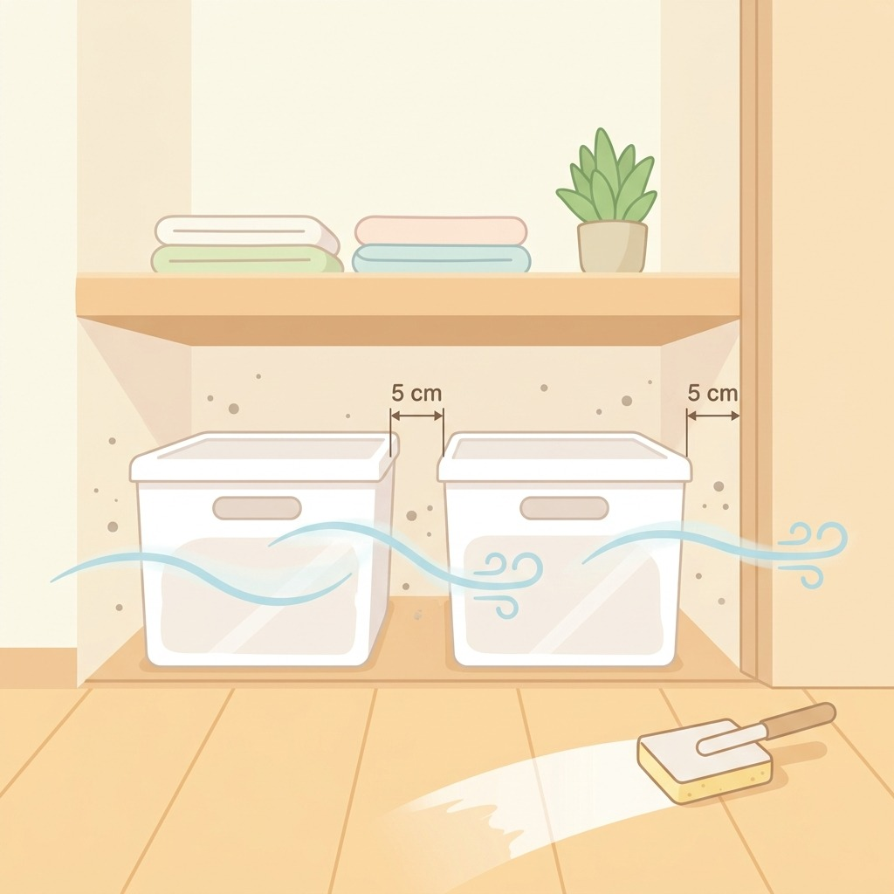

ベッド下、眠らせない
高さ別に分ければ出し入れもラク

1まず高さを測る
床からフレーム下までの高さを測り、その数字より2cm低い箱を選ぶと出し入れしやすい。

2奥は年1・手前は毎日
奥には季節家電や来客用寝具、手前には普段使う物。使う頻度で前後を分けると迷わない。

3キャスター付きで引き出す
床がフローリングならキャスター付きの平たい箱が便利。奥まで手を入れずに引き出せる。

4中身はラベルで見える化
上から見えない場所だからこそ、箱の側面と天面の両方にラベルを貼ると探す手間が減る。

5すき間5cmは空けておく
ぎっしり詰めず風の通り道を残す。時々箱を出して床を拭くと湿気やホコリがこもりにくい。
毎日のくらしメモは Instagram で更新中
Instagram をフォロー